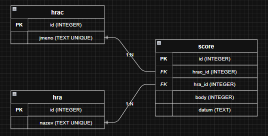
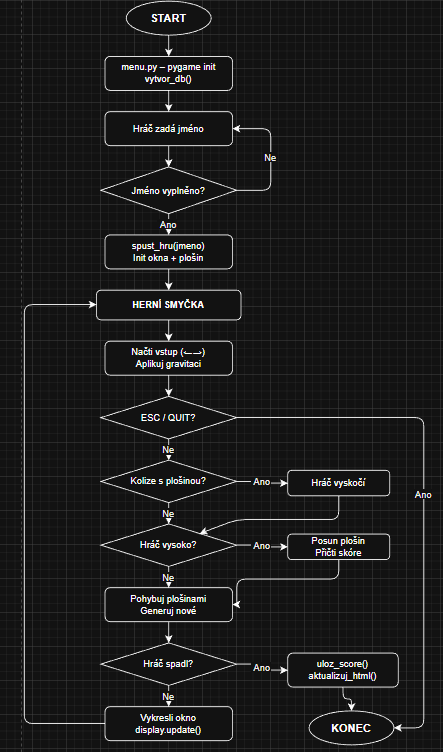

| Název hry | Hopík |
|---|---|
| Autor | Jakub Kosztolányi |
| Verze | 1.5 |
| Stav | Complete |
| GitHub | Otevřít projekt |
Hra Hopík je jednoduchá plošinová hra vytvořená v jazyce Python pomocí knihovny pygame. Hráč ovládá postavu, která skáče po pohyblivých plošinách a snaží se dosáhnout co nejvyššího skóre. Skóre se ukládá do databáze a zobrazuje na webové stránce.
| Knihovna | Použití |
|---|---|
| pygame | Grafické rozhraní, herní smyčka |
| sqlite3 | Ukládání a načítání skóre |
| http.server | Webový admin server |
| urllib.parse | Zpracování URL parametrů |
| datetime | Datum záznamu skóre |
| os | Souborový systém a cesty |
| sys | Argumenty příkazové řádky |
| random | Generování plošin |
INIT:
vytvoř okno
vygeneruj plošiny
LOOP:
while hra běží:
| načti vstup (← →)
| aplikuj gravitaci
| if kolize s plošinou:
| vyskočí
| if hráč vysoko:
| posuň obrazovku
| přičti skóre
| pohybuj plošinami
| generuj nové plošiny
| if hráč spadl:
| ulož skóre → DB
| aktualizuj HTML
| konec hry
Databáze obsahuje tři tabulky. Tabulka score je vazební tabulka realizující vztah M:N mezi hráčem a hrou.
| Tabulka | Popis |
|---|---|
| hrac | Jména hráčů (UNIQUE) |
| hra | Názvy her (UNIQUE) |
| score | Skóre, datum, FK na hráče a hru |
| NF | ✅ | Důvod |
|---|---|---|
| 1. NF | ✅ | Atomické hodnoty, bez opakujících se skupin |
| 2. NF | ✅ | Každý atribut závisí na celém primárním klíči |
| 3. NF | ✅ | Žádná tranzitivní závislost mezi atributy |
| BCNF | ✅ | Každý determinant je kandidátním klíčem |

